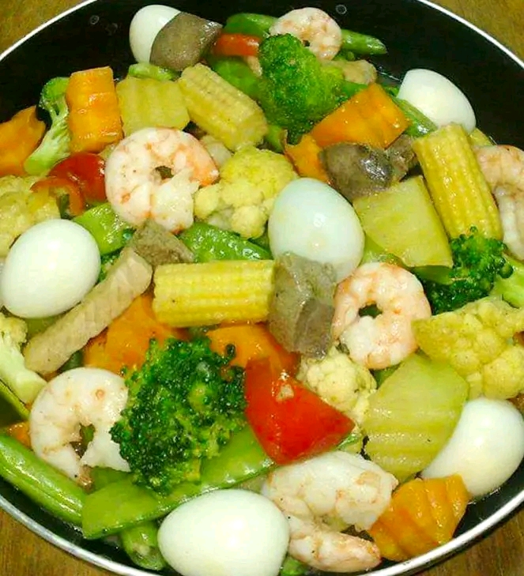

FOOD RECIPE's

menudo
Ingredients
- 1 lemon (-or 6 big calamansi(optional)
- 1 pound pork(-cut into bite-size cubes)
- 1/2 pound live (pork) (-cut into bite size cubes)
- 4 pieces hotdog/sousages(-cut into small diagonal slices)
- 3 tablespoons oil
Pata Kare-Kare
Ingredients
- water
- 2 large eggplant ends trimmend in cut into 1 inch thick
- 1 bundle long beans sitaw cut into 3-inch lengths
- 1/4 cup rice flour
- 1-1/2 cups chunky peanut butter
- 1 tablespoon oil
- 1 medium onion peeled and sliced thinly
- and pepper to taste

Pancit Palabok
Ingredients
- 250gms rice noodles
- 150gms diced chicken (optional)
- 150gms medium shrimp (shelled & juice extracted)
- 1 pc onion
- 1 clove garlic minced (lightly toasted for garnish)
- 1 bunch onion leeks (sliced thinly for garnish)
- 2 pcs boiled egg for garnish
- 1 pack palabok sauce
Sisig
Ingredients
- 800.0g Pork Face and ear, cleaned and pre - boiled
- water
- 20.0g Black Peppercorn
- 2.0pc Bayleaf
- 200.0g Knorr Liquid Seasoning 3.8L

Adobong Manok
Ingredients
- 0.5kg Chicken Leg
- 1 Head garlic
- 1 tsp black Peppercorn
- 3tbls Distilled Vinegar
- 2tbls MAGGI oyster sauce
- 2tbls Soy sauce
- 1 cup water
- 1 tbl vegetable oil

Ingredients
Chopsuey
Ingredients
- 2Tbsp Mantika
- 1pack Top Meat Pork Pangsahog 100g
- 1/2cup Tubig
- 1cup Sayote,sliced
- 1/4cup Carrots,sliced
- 2cups Repolyo, sliced
- 1/2cup Red Bell Pepper,sliced
- 1tsp Cornstarch tunawin sa 1/4 cup na tubig (optional)